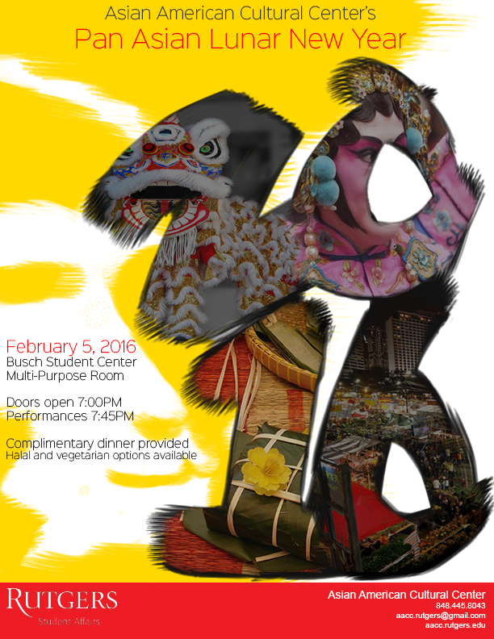
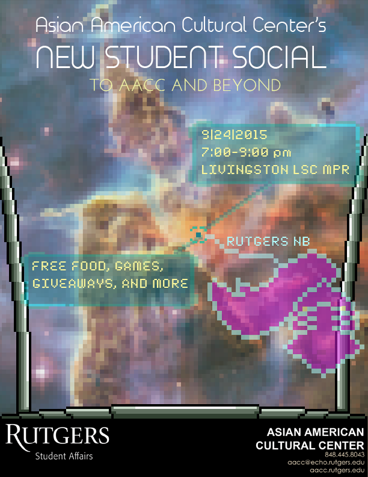
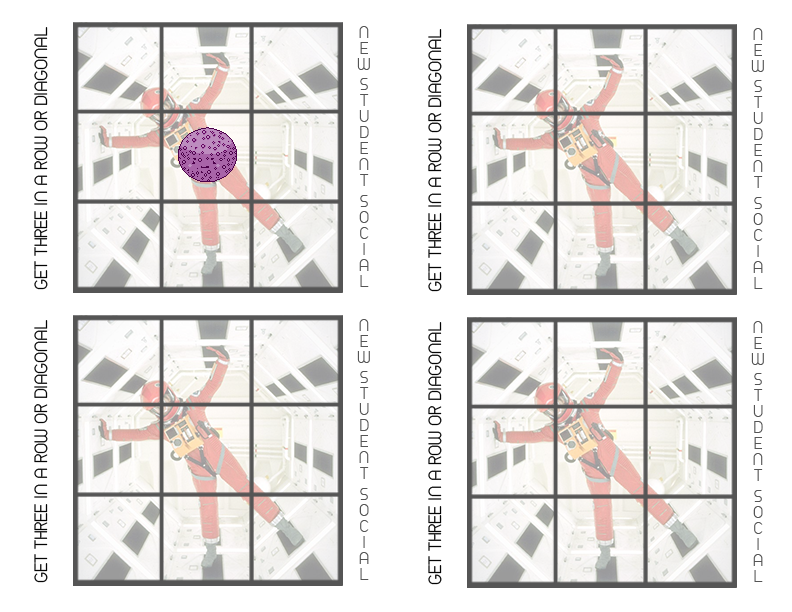

-

* I'm more comfortable with traditional drawing than digital so I am v proud of the lineart.
* The imagery is a bit on the nose but I think clarity is nice to have in advertisements.
* If I were to change this now I would use a different font for the url and phone # for readability.
* It's a square because us interns were cropping flyers inconsistently when setting them as our profile photos.
* (people ended up cropping it anyways)
- 
* Originally the '2016' was set on a white background - I felt it was too empty so I painted in the monkey
(for the year of the monkey), but now I think the white space would've looked less visually noisy.
I'm not too keen on the red & yellow - I think the banner could've benefitted from being transparent.
- 
* The concept was a first person view from within the cockpit of a space craft,
but in retrospect I don't think the final image conveys that clearly.
I was obsessed with making all the art assets for this event pixel art;
when the only reason for doing something is "because I wanted to" I think it shows.
At least this adorable planet was created in that process:
- 